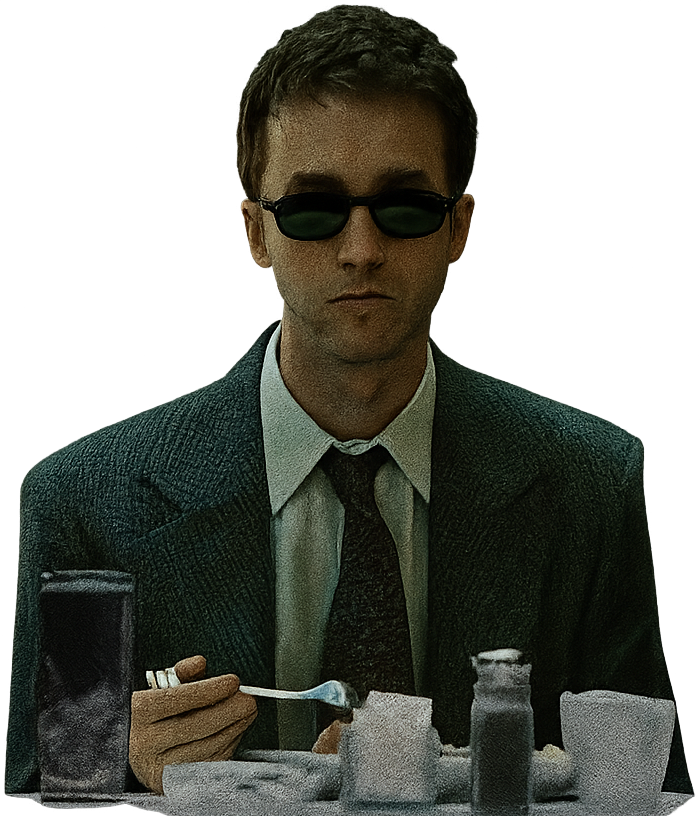
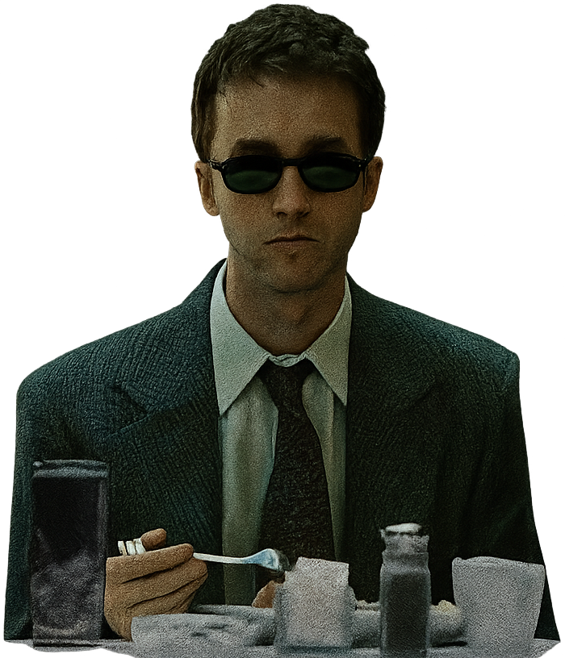

Hello!
I am new developer.
 

About Me
Hello, my dear friend. Here you can read about my story, interests, and what might concern you.
My name is Kostya, it's a strange name, I don't particularly like it, but I still thank my parents for it. I'm fifteen, a simple and easy period for people, full of energy, ideas, unusual approaches, and other things that people so long to regain in later life. Isn't that right?
These days, my interests include classic books, obviously but also IT, movies, and TV series. My favorite books include Crime and Punishment, Wuthering Heights, and All Quiet on the Western Front. My favorite TV series and movies include Fight Club, Breaking Bad, and The Sopranos. I highly recommend anyone reading this to get acquainted with these works of art.
I first saw one when I was six years old. On my eleventh birthday, I received a gift: an Asus X50N old, dusty, used, but so dear to me. That was my first encounter with a computer. I played games and was consumed with the desire to create something of my own. Four years later, I graduated from school. I passed my exams. And I had to choose a profession. I chose programmer. As I write this, I'm a first-year student.
Skills
As I mentioned earlier, I'm a first-year student. I have a basic understanding of HTML, CSS, and JavaScript. I can create simple websites. I'm constantly learning and improving my skills. I'm also interested in backend development and databases.